Exposing VLE activity data (EVAD)
The EVAD
project has demonstrated a number of visualisations including the use of Gephi to show
connections between sites within the VLE (See How to work with Gephi to visualise a network of Sites connected by Users for details on how to do this)
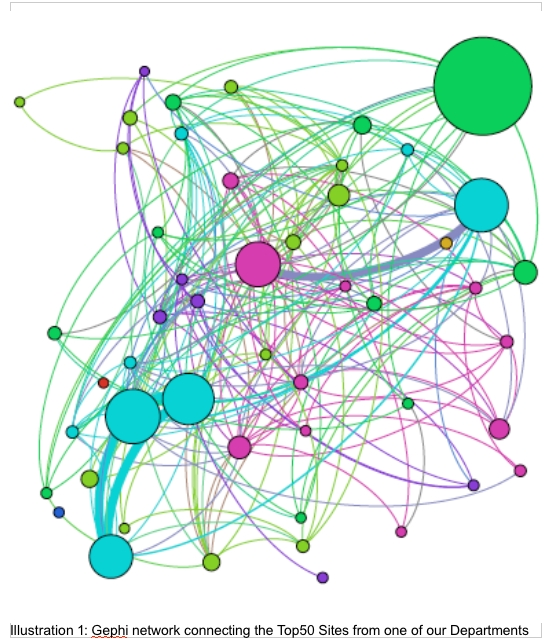
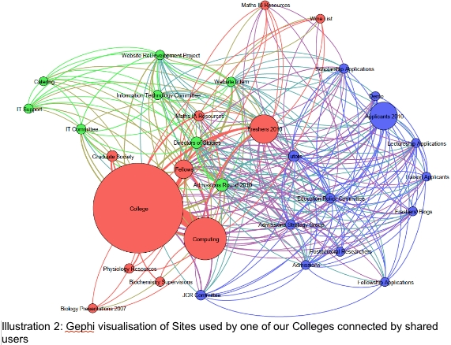
They also used visualisation to demonstrate patterns of VLE usage:
The top 2 events were found to be reading content (green - 44% of events logged) and user logins
(dark green - 22% of events logged). The chart below shows monthly counts for these events.
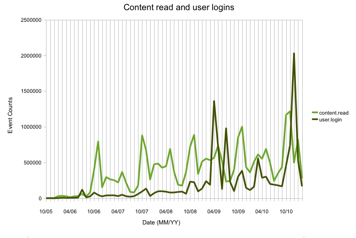
Whilst the content read shows a regular peak in Oct/Nov with a secondary peak around May, the logins do not show such a clear pattern. Both show a clear gradual underlying increase over the years. More investigation would be needed to find out exactly what is causing the peaks in logins. This is especially the case since it bears little relation to the number of user logouts recorded (see later graph).
Whilst the content read shows a regular peak in Oct/Nov with a secondary peak around May, the logins do not show such a clear pattern. Both show a clear gradual underlying increase over the years. More investigation would be needed to find out exactly what is causing the peaks in logins. This is especially the case since it bears little relation to the number of user logouts recorded (see later graph).
The following shows a weekly count for content read giving more granularity of when exactly the
peaks are. The main peaks are repeated in late October with secondary peaks in Feb and mid-
June.
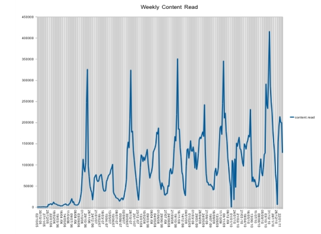
This considers weekly counts over the last year. (Feb 2010-2011).
Term dates were:
12th January - 12
th March 2010. Easter (5th April 2010) shows a slight dip.
20th April - 11
th June 2010. A gradual increase with a peak at the end of May.
This coincides with the examination period. There is a long dip over the summer vacation period.
5th October-3rd
December 2010 First peak is early October with the highest peak at the end of
October. This peak at the end of October might not be expected and it would be interesting to find
out more about what is going on here. There is a large dip over the Christmas period
18th January - 18
th March 2011. There is a wide peak during January and early February.
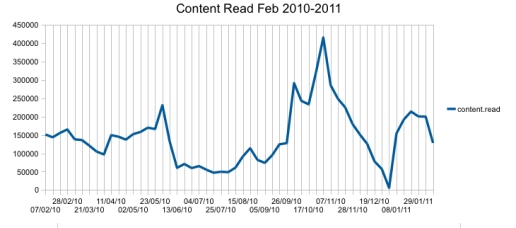
Although content read does have a peak at the start of the Academic Year in October, there is a
higher peak in November. It would be interesting to investigate if there is an explanation for this
peak half way through the term – such as a large number of students starting assignments which
rely on Camtools.
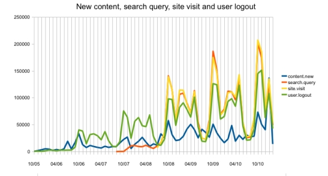
This shows the next active events in terms of counts. Note the scale is roughly 10% of that for
viewing content and logging in. However the overall peaks for site visits, search and user logout
very much mirror those for viewing connect and logins showing consistent periods of peak activity
corresponding to term dates.
As one might expect, lots of new content (blue line) has been added each October, at the start of
the academic year, but there is a more recent and much higher peak in January of this year.
The following series of charts show analysis of the next highest peaks broken down by event type.
Note the scale is several times smaller that that for reading content.
The calendar event is logged when users create (red line) or revise (yellow line) site calendars
which may be used to display lecture times, assignment submission dates and so on. There is a
clear October peak for both creating and revising calendars.
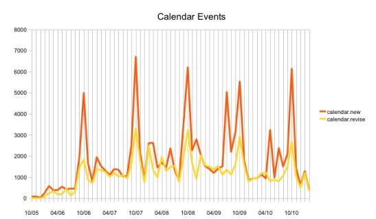
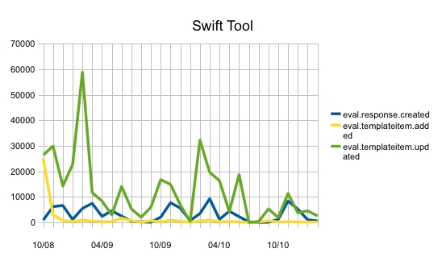
This tool has been added in the last few years and is used to for student surveys. The green
update peaks in February would correspond to lecturers preparing surveys at this point which are
returned by students roughly a month later (blue line).
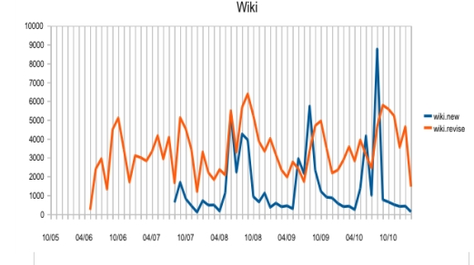
The counts for Wiki activity show a peak in new material just prior to the October start of year with high revision activity at the start of October.
The counts for Wiki activity show a peak in new material just prior to the October start of year with high revision activity at the start of October.
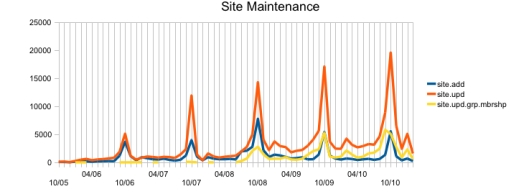
Site Maintenance demonstrates a clear October peak with a secondary peak in Jan/Feb. There is
clearly a gradual increase in the number of sites being updated (red line) whereas the number of
new sites (blue line) has levelled off.
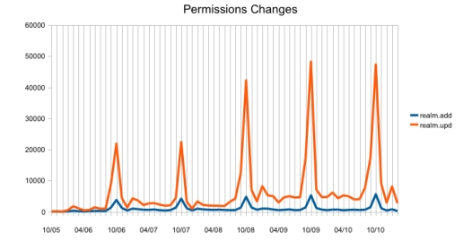
Permissions changes reflect people being added or updated on sites. Again peak activity is in
October.
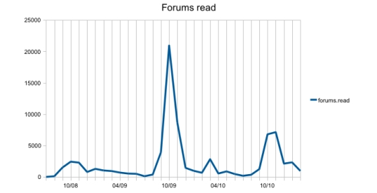
Forums again show a peak in October but their usage looks like it has tailed off.
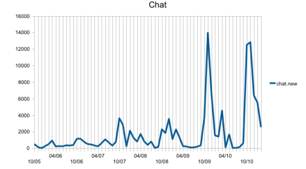
The chat tool also shows peaks in October and for the last year in November too.
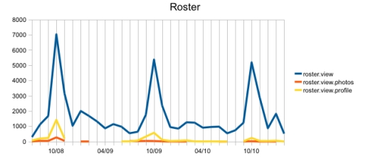
Again the roster tool, which is used to view other members of a site shows peak usage in October.
One area that I was particularly asked to look at was the Tests and Quizzes (T&Q) tool. The scale
for this is again of a much smaller order of magnitude but again shows October peaks:
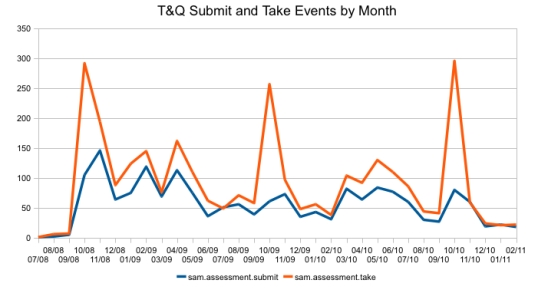
This final chart shows the overall totals for each month (blue) and the monthly totals excluding
logins and content read (orange). This again shows a peak in October and other peaks
corresponding to the terms. There is not much growth, in terms of event counts, over recent years
in these other activities.
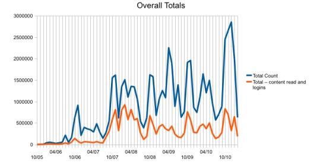
Conclusions
Many activities show a clear usage peak corresponding with the start of the Academic year in
October. However reading content, which accounts for over 44% of the counts, has a higher peak
in November than in October. It would be interesting to learn exactly what is causing this
November peak.
It also seems likely, given the different pattern in logouts, that the high spikes in login activity seen
in the first chart are caused by spurious data and further investigation is needed here.